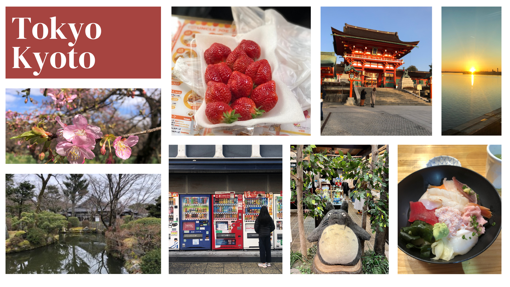
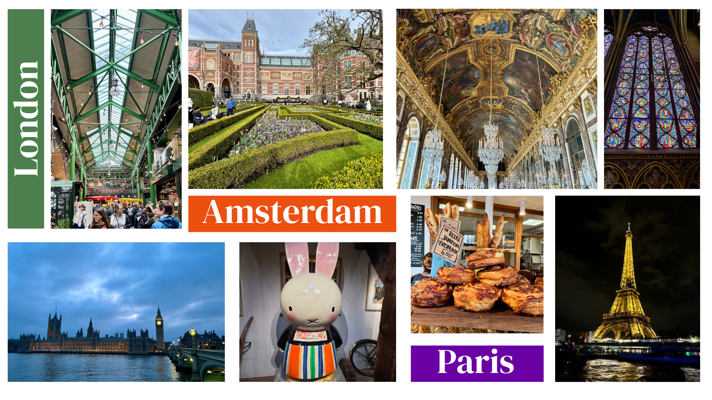

About Lauren:
Lauren Ma is a striving junior at Whitney High School. She loves traveling and has been fortunate enough to visit many different places around the world. She hopes to share some of her travel experiences with you, from sightseeing to photography to food recommendations!
Favorite Destinations
Japan
My family visited Tokyo and Kyoto in February 2023. We spent seven days in the bustling, contemporary capital of Tokyo, exploring sites like Shinjuku National Garden and eating our way through the city. I loved the convenience stores, the fresh sushi at Tsukiji market, and the gyukatsu. Everything was very accessible by public transportation or walking. We also spent three days in Kyoto, the old capital, visiting historic shrines and temples, exploring the Gion district, and wandering the food stalls at Nishiki market. Overall, the weather in February was still a bit chilly, but not as crowded compared to peak season (March to May and September to November). While it was too early for cherry blossoms, we did see beautiful plum blossoms.
 More information about what to do in Kyoto More information about what to do in TokyoEurope: Paris, Amsterdam, London
We spent ten days traveling around Europe in spring of 2024. It's nice how so many destinations in Europe are only few-hour train rides away from each other. We were able to take the Eurostar from London to Amsterdam and Amsterdam to Paris. Our first stop was London, the perfect blend of old European charm and modern city. Some of my favorite memories include trying the various food stalls at Borough Market and enjoying the scenery at Hyde Park. Traditional British food, however, turned out to be quite the disappointment. Next, we made our way to Amsterdam, a vibrant and unique city known for its canals, art, and architecture. I loved visiting the Rijksmuseum and all the little cheese shops. Our final destination of the trip was Paris. The Eiffel Tower and the Louvre were cool to see, but Versailles, Les Invalides, and the neighborhood of Montmartre were the real gems. Not to mention bakeries on every corner and all around beautiful architecture!